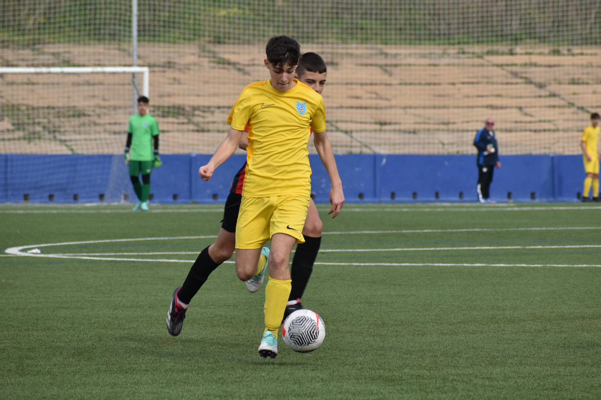
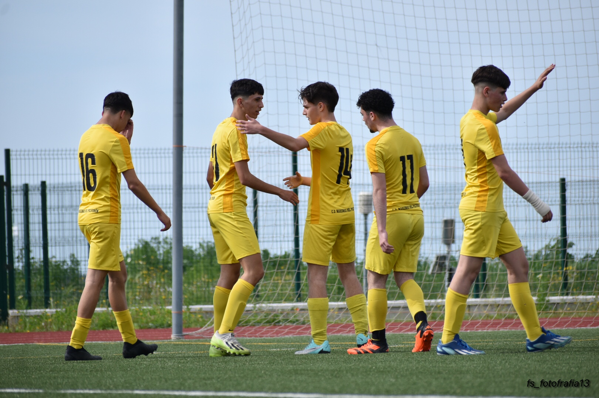

| Este equipose encuentra en la categoría de cadetes más exactamente en la tercera división de cadetes del fútbol andaluz, el entrenador de este equipo es Manuel Díaz procedente del 1889 donde fue segundo entrenador de segunda andaluza. Este equipo al principio de año tenía como objetivo el mejorar la plantilla, objetivo el cual se cumplió con creces. actualmente a falta de 4 jornadas se encuentran en el sexto lugar de la categoría un puesto más que digno para el equipo, la alineación de este equipo está compuesta por una 433 con un media punta, esta alineación está resultando bastante útil al equipo aunque en algunos casos extremos también hay cambiar de formación llegando a jugar conuna 442 con un delantero mas caido al centro del campo, más abajo podréis ver las distintas imágenes del equipo. | |
|---|---|
|  |
Este partido fue contra el san diego equipo de nuestra propia liga el partido terminó 2-2 con dos tarjetas rojas para el marismas del polvorín, este es un partido muy importante ya que si ganabamos el partido los adelantabamos en la liga al final acabamos en reparto de puntos. |
|  |
Este partido es
la vuelta despues de navidades necesitabamos un buen resultado para
poder coger confianza, el partido se jugo en el campo del valverdeño y
el partido termino con un 1-5 para el marismas del polvorín. |